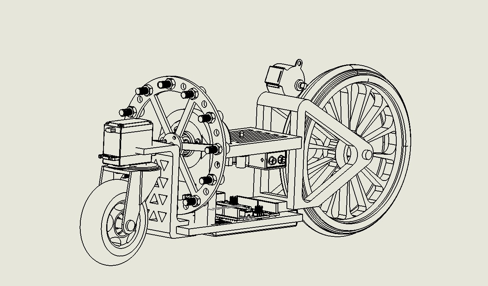
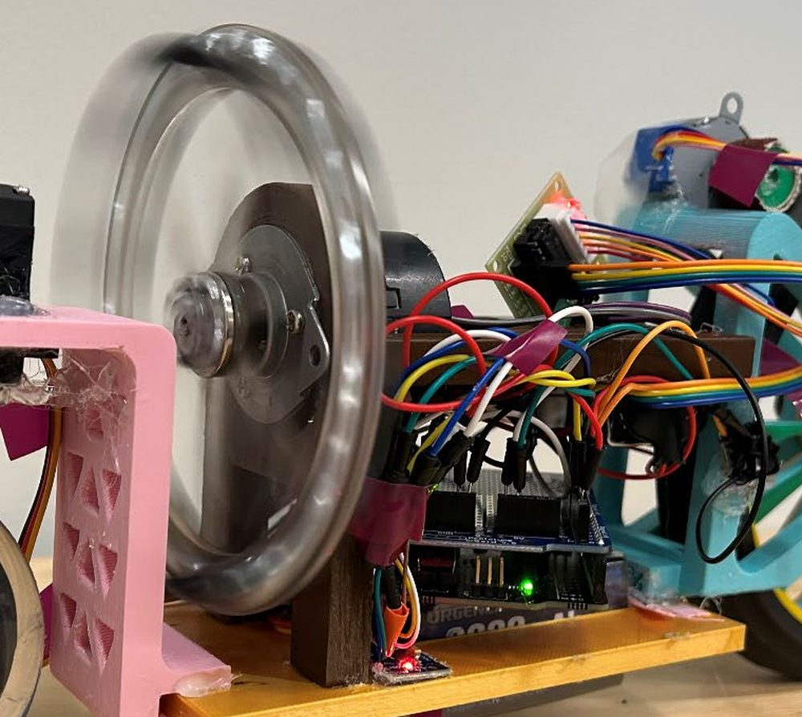

Reaction-wheel self-balancing bicycle
A bike that balances itself while standing still. Instead of steering, it spins a reaction wheel: when the frame starts to tip, the controller speeds the wheel up and the reaction torque pushes the frame back.
SolidWorks · FDM printing · laser cutting · Arduino UNO · MPU-6050 IMU · Nidec 24H brushless motor · C++
- Role
- Designed, built and programmed it on my own
- Result
- Holds unassisted balance on two wheels while stationary
- Cost
- $39.54 in parts (full list below)
- Hardest bug
- A motor driver whose pin-out didn't match its own documentation
How it works
A bike standing still is an inverted pendulum: once it starts to fall, gravity makes it fall faster. The MPU-6050 measures tilt angle and rate, and a PID loop on the Arduino turns that into a speed command for the brushless motor. Speeding the wheel up pushes the frame the other way. A wheel only makes torque while it's accelerating, so the controller has to react early rather than hard.
Design


I kept everything cheap and makeable with what I had: 3D-printed frame parts running on 608z bearings, a laser-cut acrylic disc for the reaction wheel, an Arduino UNO, an MPU-6050 and a Nidec 24H brushless motor.
Parts list
| Part | Qty | Source | Cost |
|---|---|---|---|
| Bought | |||
| MPU-6050 accelerometer/gyro | 1 | Amazon | $3.33 |
| Rear wheel (rubber) | 1 | Ax-Man | $0.95 |
| LiPo battery (3S 11.1 V) | 1 | Amazon | $16.00 |
| Nidec 24H brushless motor | 1 | Amazon | $7.99 |
| Front wheel | 1 | Ax-Man | $3.95 |
| 608z bearings | 3 | Amazon | $1.56 |
| MG996R servo | 1 | ECE Depot | $4.00 |
| LM2596 voltage regulator | 1 | Amazon | $1.60 |
| Made in the lab (acrylic and PLA at $0.25/lb) | |||
| Acrylic reaction wheel, laser-cut (30 g) | 1 | Anderson Labs | $0.02 |
| 3D-printed second floor (56.7 g) | 1 | Anderson Labs | $0.03 |
| 3D-printed rear stack (48.7 g) | 1 | Anderson Labs | $0.03 |
| 3D-printed front stack (19.1 g) | 1 | Anderson Labs | $0.01 |
| 3D-printed rear wheel core (73.2 g) | 1 | Anderson Labs | $0.04 |
| 3D-printed lower board (30 g) | 1 | Anderson Labs | $0.02 |
| 3D-printed stepper roller | 1 | Anderson Labs | $0.01 |
| From the ME 2011 kit | |||
| Arduino UNO R3 | 1 | Course kit | $0.00 |
| 28BYJ-48 5 V stepper + driver board | 1 | Course kit | $0.00 |
| Jumper wires | 30 | Course kit | $0.00 |
| Push button (start switch) | 1 | Course kit | $0.00 |
| Fasteners and consumables | |||
| M6 bolts and nuts | 12 | Anderson Labs | $0.00 |
| Sandpaper, hot glue, electrical tape | - | Anderson Labs | $0.00 |
| Total | $39.54 | ||
Problems I ran into
At first the brushless motor wouldn't respond to its driver at all. Instead of changing the balance code again, I wrote a separate test program that drove each control line on its own, and found that the supplier had swapped the PWM, direction and start signals compared with their own documentation. After rewiring to the real pin-out, the motor worked.
Once it balanced, I reinforced the frame and added an MG996R servo to steer the front wheel, a 28BYJ-48 stepper on the rear wheel (written non-blocking so it never holds up the balance loop), a servo kickstand that retracts on its own for hands-free starts, and voltage regulation.